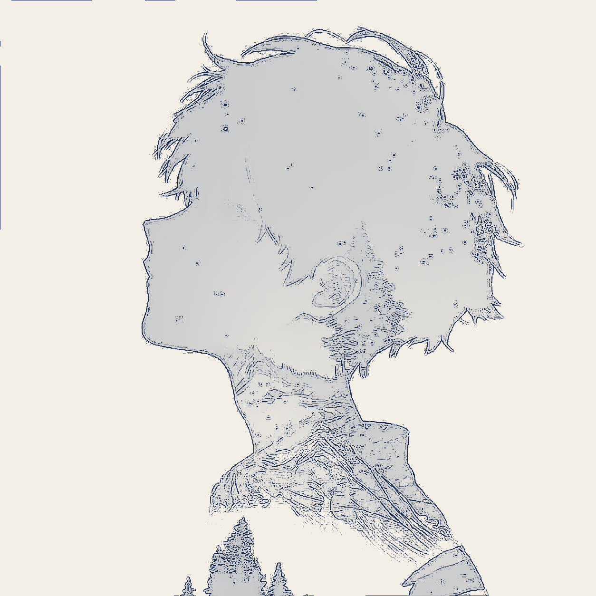
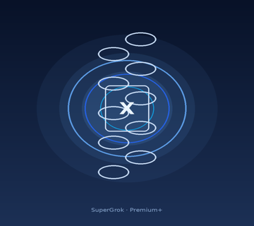

About me
我是 xyf，专注于 AI 内容实践与分享
不断探索 AI 边界与商业应用
探索属于 00 后的财富自由之路

AI MEDIA / BUILDER
WRITE · SHOOT · BUILD
SPEC.001
FOCUS : CONTENT & AI
TOPIC : AI 边际 & BIZ
FORMAT : ARTICLE / 视频
PRODUCT: DIGITAL
VALUE : LONG-TERM
VER. 1.0.0
DATE. 2025
ID 7°31′ N
L3114°05′ E
ID // XYF
CATEGORY
IN PUBLIC
FOCUS
· CONTENT
· PRODUCT
· TECH
EST. 2023
写
WRITE
拍
SHOOT
创
BUILD
Writing
写 — WRITE
写
拍SOON
创SOON

01
AI 做个人网站
域名 · skill · 内容与风格 · 出图审核 · 部署
五步用 AI 做出可上线的个人品牌站
02
敬请期待
03
敬请期待
04
敬请期待

拍 — SHOOT
Shoot
封面点进抖音 · 悬停暂停


v0.1.0 · compiling...
0%
projects
GET IN TOUCH / 联系
Let’s talk.
聊聊 AI、内容，或者一起搞点事情。
当前开放交流 · Available